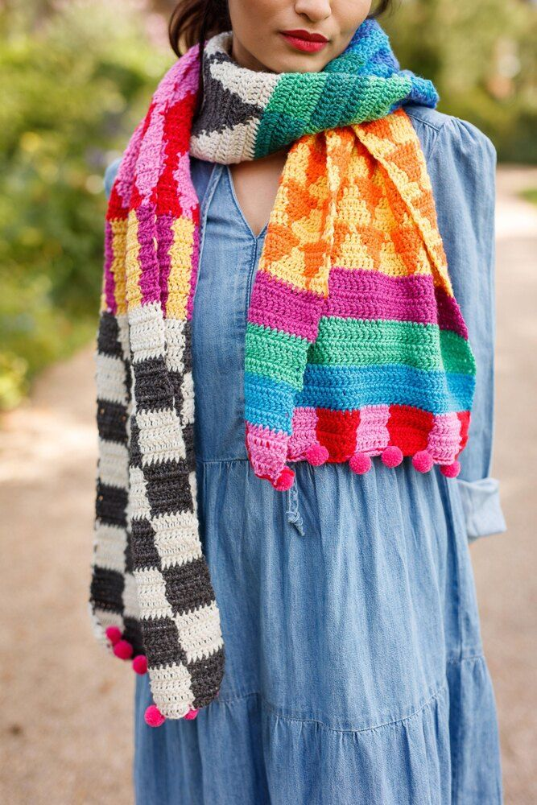
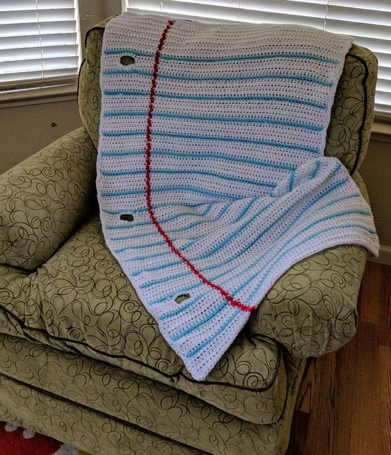

Home Page
5. Common Mistakes + Tips for Beginners
-
Mistake: Using the wrong size crochet hook for the yarn weight.
Tip: Always check the yarn label for recommended hook sizes and use a hook that matches the yarn weight to achieve the best results.
-
Mistake: Starting with too few or too many stitches.
Tip: Use stitch markers and count stitches regularly to ensure you have the right number of stitches before proceeding to the next row.

-
Mistake: Not using the correct tension and ending up with an uneven scarf.
Tip: Practice tension control by experimenting with different grips on the hook and yarn to find what feels comfortable and produces even stitches.
-
Mistake: Not weaving in ends or trimming them too short.
Tip: Leave a long tail when changing colors or finishing the project and weave the ends back through several stitches to secure them in place.

-
Mistake: Not following the pattern instructions carefully, leading to mistakes or errors in the finished project.
Tip: Read the pattern carefully and make sure you understand each step before beginning. Refer to tutorials or videos for clarification if needed.
-
Mistake: Crocheting too tightly or too loosely, which can also lead to an uneven or misshapen scarf.
Tip: Practice tension control and use the recommended hook size for the yarn weight. Remember to relax and enjoy the process rather than gripping the hook too tightly.